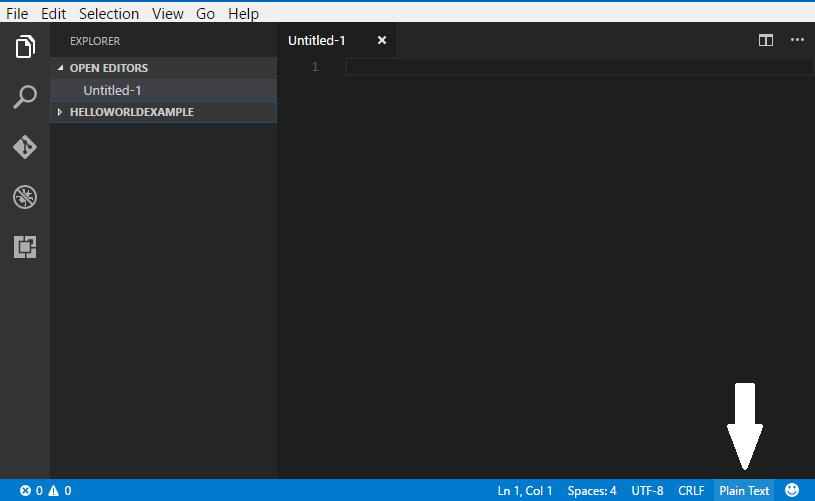
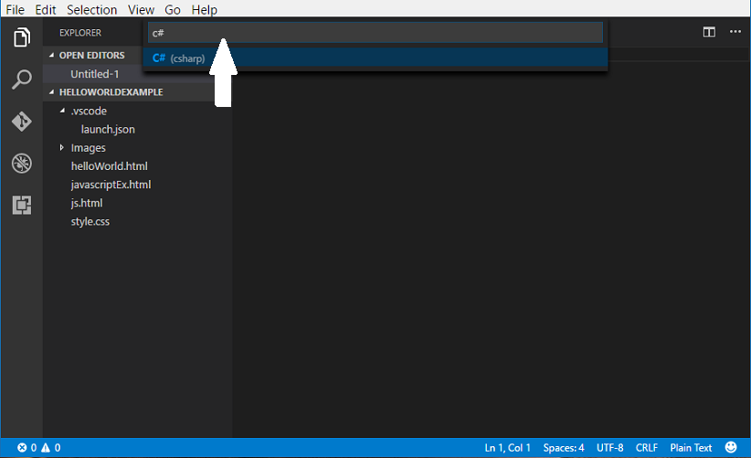

1. Download Visual Studio Code
First you will need to install Visual Studio Code.
For C#, you will also need to install .NET Core.
2. Installing C# extension
If you are coding in C# you will need to install C# extension.
Go to View > Extensions, then type in C# and select C# for Visual Studio Code(powered by OmniSharp) to install.


3. How to change background color within Visual Studio Code
Go to File > Preferences > Color Theme

4. How to change language mode
The default language mode in Visual Studio Code is Plain Text
To change it, go to the buttom right-hand corner of the editor and select Plain Text box
A text box will appear at the top center of the screen, type in the language you want and select
Back to top